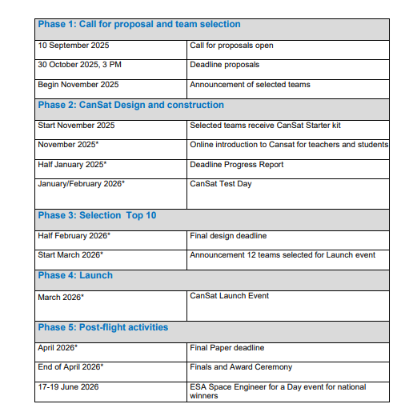

What is the Cansat competition
CanSat is a competition for students in the upper grades of pre-university secondary education (HAVO) and pre-university education (VWO). Students work in teams to devise a mission, write a research proposal, build a satellite with a microprocessor and sensors or moving parts, and test it. The top 10 teams will launch their CanSat in a real rocket. Students gain experience building a device that meets specific requirements. They also learn to collaborate and plan in a team by coordinating their activities effectively. CanSat can be completed as a project or a Technasium master's thesis. But simply participating for fun is also an option. CanSat is an ESERO project of the Netherlands Space Office (NSO). The aim of the competition is to spark young peoples enthusiasm for a career in technology.
The most important rules of the cansat project are:
- All the components of the CanSat must fit inside a standard soda can (115 mm height and 66 mm diameter), with the exception of the parachute.
- The mass of the CanSat must be between 300 grams and 350 grams. CanSats that are lighter must take additional ballast with them to reach the 300 grams minimum mass limit required. The rocket is designed to launch a payload with a specific mass. If the payload mass is too high or too low, it will affect the rockets flight path.
- The CanSat must land within the security zone designated by the authorities of military terrain 't Harde. For single stage parachutes this means that the maximum flight time is 90 seconds. This is the total flight time including lift-off. This means the CanSat should descend from 1 km to the ground in 77 seconds. This implies an average minimum descent rate of 13 m/s. This flight time ensures that the CanSat will land close to the launch site. When systems other than single stage parachuting are used, exceptions are possible in consultation well in time before Final Design. The systems must be tested to prove that they are safe.
- The total budget of the final CanSat model should not exceed €600. This does not include ground support equipment, such as laptops, power supplies, antennas. This does include the cost of the CanSat starter kit received at the start of the competition, unless the teams opt out of receiving the CanSat kit.
Primary and secondary mission
Every cansat team has a primary and a secondary mission. In the primary mission, every team has the same objectives: measure the air pressure and temperature. The secondary mission is different for every team. You can read our secondary mission at our goal.
Schedule

The launch will take place on the 20th of march at t Harde, but before that we need to be one of the ten teams that will be selected for the launch event. After the final design, this will be announced as you can see in the picture above.